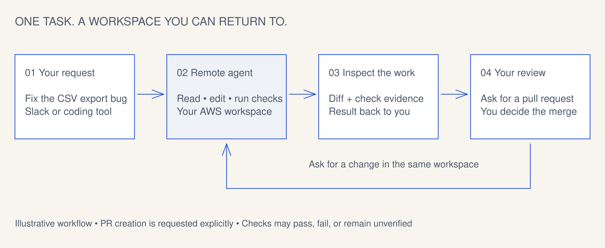
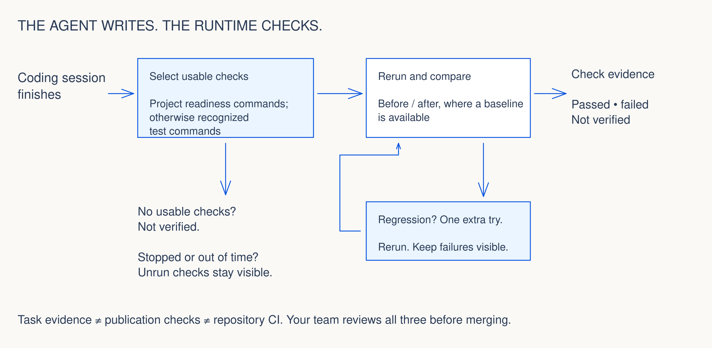

01 / Request
Your request
“Fix CSV exports with empty records. Add a regression test. Keep the column order.”
Start from a project channel or an authorized coding-tool connection.
How it works
From the first request to a follow-up in the same workspace. See where the work happens, how checks run, and what your team reviews.
01 / Task journey
Slack and coding tools are entry points. Rovara runs the coding agent remotely, then brings its result back to you.
01 / Request
“Fix CSV exports with empty records. Add a regression test. Keep the column order.”
Start from a project channel or an authorized coding-tool connection.
02 / Work
The remote coding agent reads the repository, makes the change, and runs commands in its prepared workspace.
The work happens in your AWS account. Your laptop is the entry point.
03 / Evidence
Read the code diff alongside the checks that passed, failed, or could not be verified.
The runtime reruns usable checks; an agent’s success message is not the report.
04 / Review
“Open a draft PR for review.” Inspect the patch and its check evidence with your team.
PR creation is a separate request. You decide what gets merged.
05 / Continue
“Also handle a file that contains only empty records.” Continue in the retained workspace.
Idle compute can stop while files and conversation state remain.
An explanatory scenario, not a recorded product run. See what to inspect.

02 / Verification
The agent writes the code. The runtime reruns usable checks and reports what happened. When a previously passing check regresses, it gives the agent one extra attempt.

The named command passed in that run. Review whether it covers the change you requested.
A failing check stays in the report. A draft PR can carry unfinished work and its failures for review.
No usable checks, a stopped task, or an unrun command is visible. Missing evidence is not a pass.
03 / Workspace lifecycle
Idle compute can stop while files and conversation state remain. Your next request can resume work in that workspace.

Retained storage still costs money. Closing a workspace checks for unpublished work before releasing it. Removing the environment is a separate operator task.
04 / Architecture
Your AWS account contains the control services and coding workspaces. Slack, GitHub, model routes, and configured connectors have distinct interactions.

The Slack orchestrator routes tasks and uses allowed tools. Its action policy can allow, ask, or deny a tool call. A requested confirmation offers Approve or Cancel.
The Pi coding agent reads, edits, and runs shell commands on the EC2 worker. It uses the project devcontainer when configured. The action gate is not approval for every worker edit or command.
GitHub handles repository access and PRs. Connector scopes are configured on the server. Bedrock is AWS-hosted; external model providers receive requests outside your account.
agentx mcp → authorized developer task API.
Client tools are not the remote coding harness.
The AWS account is the documented security boundary. Environments in one account are not independent boundaries. This diagram is a service overview, not a complete network or security assessment.
The final decision
Your team reviews the code, task evidence, and repository CI using its existing merge controls.
Follow a first task